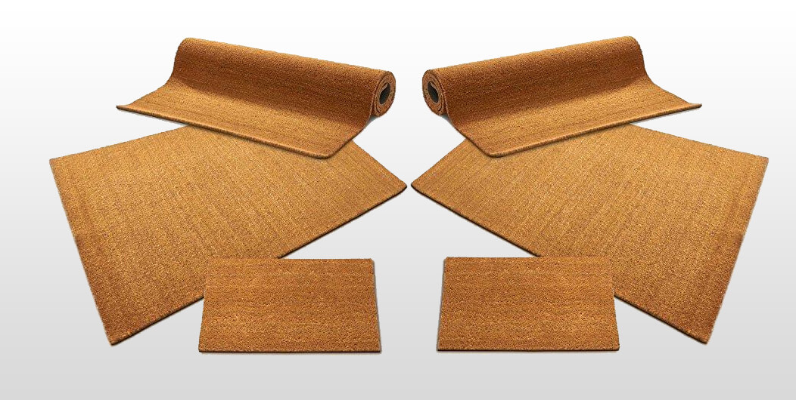

The Sri Lankan coconut coir and coir-based product manufacturers have been a major cottage industry in Sri Lanka for centuries. The unique technique is known as the ‘drum system’ is used to extract fibre, producing long pure fibre, mostly suitable for the brush industry. It falls into two main categories; brown and white fibre, which contributes to 80% and 20% respectively of the world coir fibre demand. Today the coconut coir product industry includes large corporations as well as SMEs producing a range of agricultural, household, and industrial products for the global market.
It is widely used to prevent soil erosion on the road and railway embankments, riverbanks, leisure grounds and in industrial areas as well as in cultivation areas. Coir geotextiles have the mechanical strength required to hold soil in place and prevent erosion. The nettings break up the runoff and dissipate the energy of flowing water. The coir geotextile replaces polymer fabric such as Polypropylene, Polyester and Nylon, etc. reducing its impact on the environment. On top of being 100% organic and biodegradable, coir also provides an ecological niche for the establishment of new vegetation by absorbing water and preventing drying out of the topsoil and seeds.
Sri Lankan coir-based product manufacturers have been producing trendy coir mats for both export and the local markets. Coir mats and carpets are particularly important today because more and more emphasis is placed on the need for embracing an eco-friendly lifestyle or going green as it’s simply called.
